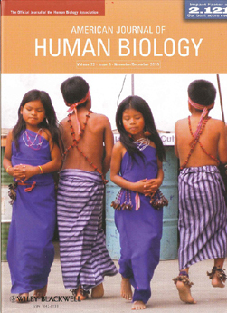
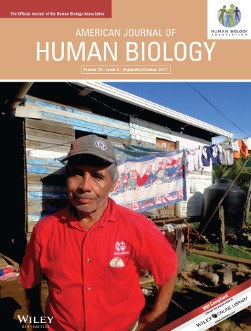
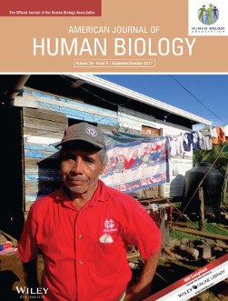

Field Sites
Bolivia: Tsimane
 The Tsimane are a subsistence-level Amerindian population (pop. ~10,000) scattered across approximately 120 villages along the Maniqui River and surrounding forest areas. Most Tsimane have minimal access to medical care, market foods, or wage labor opportunities, and subsist primarily on locally cultivated plantains, rice, manioc, and corn, hunted game, and wild fish (Gurven et al., 2007). Tsimane live in large family clusters in open-air huts with thatched-palm roofs. Few villages have wells or other clean water sources; water is generally obtained from nearby rivers and streams and rarely boiled. As of yet, no village has electricity or sewage. Domestic animals (dogs, cats, pigs, and chickens) are owned by individual families, but are rarely penned and roam freely around villages and familial spaces. Despite economic impoverishment, the Tsimane are food secure. Nearly 70% of the average adult diet is comprised of locally cultivated rice, plantain, manioc, and maize, with the remaining 30% of the diet comprised of hunted game, river fish, and cultivated or foraged fruits and nuts. There is little wasting indicative of protein malnutrition in children (Foster et al., 2005), and the prevalence of underweight among reproductive aged females is less than 2%.
The Tsimane are a subsistence-level Amerindian population (pop. ~10,000) scattered across approximately 120 villages along the Maniqui River and surrounding forest areas. Most Tsimane have minimal access to medical care, market foods, or wage labor opportunities, and subsist primarily on locally cultivated plantains, rice, manioc, and corn, hunted game, and wild fish (Gurven et al., 2007). Tsimane live in large family clusters in open-air huts with thatched-palm roofs. Few villages have wells or other clean water sources; water is generally obtained from nearby rivers and streams and rarely boiled. As of yet, no village has electricity or sewage. Domestic animals (dogs, cats, pigs, and chickens) are owned by individual families, but are rarely penned and roam freely around villages and familial spaces. Despite economic impoverishment, the Tsimane are food secure. Nearly 70% of the average adult diet is comprised of locally cultivated rice, plantain, manioc, and maize, with the remaining 30% of the diet comprised of hunted game, river fish, and cultivated or foraged fruits and nuts. There is little wasting indicative of protein malnutrition in children (Foster et al., 2005), and the prevalence of underweight among reproductive aged females is less than 2%.
Ecuador: Shuar
Shuar are indigenous Amazonians of neo-tropical Ecuador and northeastern Peru who traditionally lived in scattered households across the Paute and Upano River Valley between the eastern Andean foothills and the Cutucu range. As trade was established with non-Shuar (Colonos) in the 1890s, Shuar expanded eastward. They now live on both sides of the Cutucu and throughout the Upano River Valley.
Ecuadorian Shuar number 50,000-110,000 and reside in over 668 communities. Shuar economy was traditionally based on household production via swidden horticulture, hunting, and fishing. Upano Valley Shuar are currently experiencing rapid socio-economic change, with their economy primarily based on small-field horticulture, mixed small-scale agro-pastoralism and, when available, wage labor and timber sales. Diet is based on traditional horticultural products, augmented with non-traditional foods such as chicken, rice, sodas, chips, and sardines; hunting and fishing are no longer as important economically. In the last decade, dirt road and electrical grid access has increased dramatically for Upano Valley communities. Paving of the main road between Sucua and Puyo to the North, completed in 2009, is further accelerating change in the area.
In contrast, Cross-Cutucu Shuar lack access to roads and the electrical grid. Hunting, fishing, and subsistence horticulture remain the primary means of subsistence, with limited agricultural, cattle, or timber sales. Travel to market centers from riverside communities involves a motor canoe trip ranging from 1-16 hours, followed by an 8-9 hour bus ride, with some communities a day's walk or more from navigable rivers. However, construction of additional dirt roads across the Cutucu has recently begun, and plans for electrification are underway. One of the primary goals of the Shuar Health and Life History Project has been to use qualitative and quantitative techniques to document ongoing cultural changes and their effects on health in the region.
Honduras: Utila
 Utila is an island off the coast of Honduras with an eclectic history. The island measures only 11 km by 4 km, yet is home to a number of distinct social and ethnic groups. These include Spanish-speaking mestizo immigrants from the mainland, Utilian descendants of British and Americans who settled in the late 19th century, and ex-pats who come to Utila from the United States and elsewhere for dive tourism. According to local informants, Americans come to Utila with "the immune system of an infant". That is, they are highly susceptible to local parasites and pathogens, which are common due to lack of public health infrastructure.
Utila is an island off the coast of Honduras with an eclectic history. The island measures only 11 km by 4 km, yet is home to a number of distinct social and ethnic groups. These include Spanish-speaking mestizo immigrants from the mainland, Utilian descendants of British and Americans who settled in the late 19th century, and ex-pats who come to Utila from the United States and elsewhere for dive tourism. According to local informants, Americans come to Utila with "the immune system of an infant". That is, they are highly susceptible to local parasites and pathogens, which are common due to lack of public health infrastructure.
 The unique context of Utila provides a natural experiment for examing how social differences and different developmental histories impact on the health of different individuals living in the same environment. Our studies in Utila examine how psychosocial stress relates to diabetes and hypertension risk, the impact of stress and disease on immune function, and the relationships between cultural history and identity and health.
The unique context of Utila provides a natural experiment for examing how social differences and different developmental histories impact on the health of different individuals living in the same environment. Our studies in Utila examine how psychosocial stress relates to diabetes and hypertension risk, the impact of stress and disease on immune function, and the relationships between cultural history and identity and health.